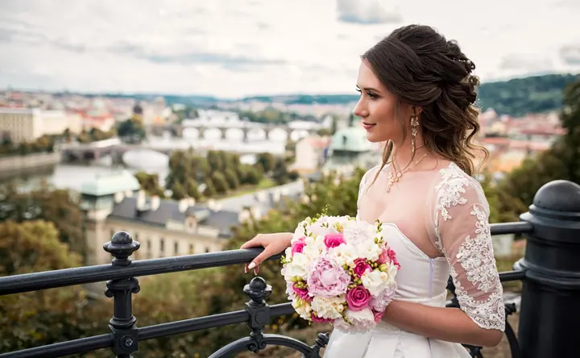
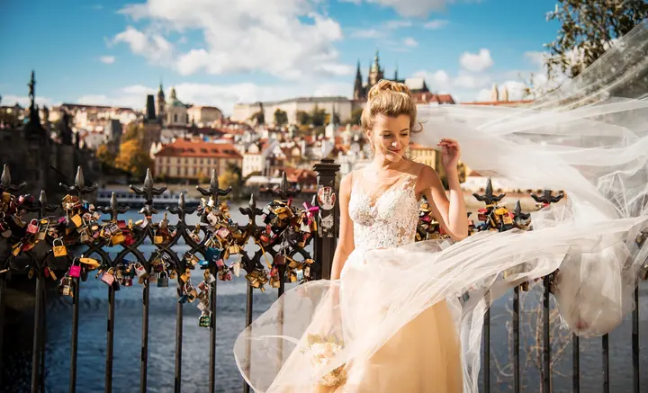
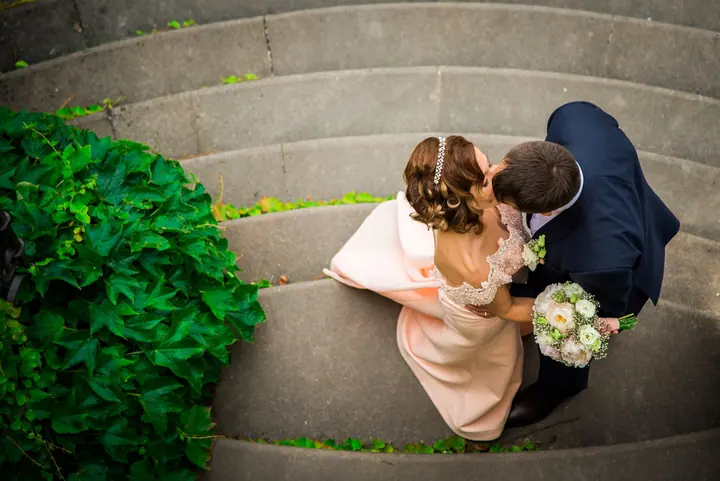
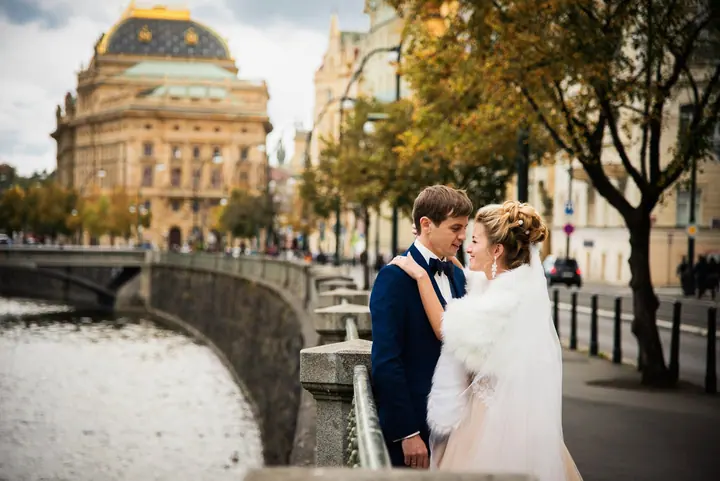
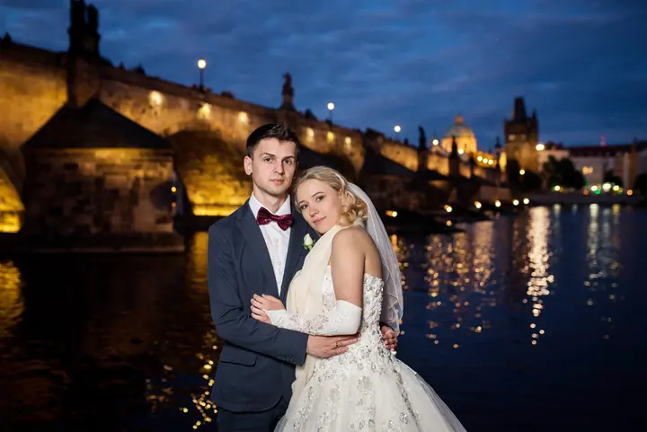

Svatby
Fotím celý svatební den, od přípravy až po večerní procházku Prahou. Na focení s vámi chodím do historických uliček, k Vltavě i na zámek a fotím za každého počasí.





Jmenuji se Dmitriy Lisniak a fotím svatby v Praze, venkovní Love story pro páry a rodiny s dětmi. Rád vás provedu místy, kde vznikají fotky, ke kterým se budete vracet.
Více o mně
„Pražské uličky, mosty a vy dva“
— Dmitriy Lisniak
Fotím celý svatební den, od přípravy až po večerní procházku Prahou. Na focení s vámi chodím do historických uliček, k Vltavě i na zámek a fotím za každého počasí.
Venkovní focení pro páry, třeba v pražských ulicích nebo v lese. Je to klidná příležitost, jak si zvyknout na foťák.
Fotím rodiny s dětmi v exteriéru, uvolněně a bez strojeného pózování. Mnoho párů se ke mně po svatbě vrací právě s dětmi.
Fotografie jsou ilustrační
Nejvíc času trávím se svatebními páry. Fotím v pražských uličkách, u Vltavy, na Karlově mostě, v kostelech i na zámcích, ale stejně rád vyrazím do lesa, kde se světlo prodírá mezi stromy.
Před svatbou se rád potkám osobně, abychom si v klidu probrali vaše představy. Na focení pak přicházím s vlastními nápady a jsem aktivní celý den. Déšť mě nezastaví, i v něm dokáže vzniknout kouzelná fotka.
Kromě svateb fotím Love story v exteriéru a rodiny s dětmi. Ozvat se mi můžete telefonicky, přes Viber, WhatsApp nebo e-mailem.
Zavolejte mi, napište na Viber, WhatsApp nebo e-mail a dejte mi vědět termín a místo.
Potkáme se a probereme vaše představy, místa na focení i všechno, co vás zajímá.
Jsem s vámi aktivně celý den, přicházím s nápady a fotím za každého počasí.
Fotky pečlivě vyberu a upravím, abyste si mohli svůj den prožít znovu.
Hlavně v Praze, v historickém centru, u Vltavy i na méně známých místech. Rád fotím také v přírodě, třeba v lese.
Fotím za každého počasí. Fotky v dešti můžou být stejně kouzelné jako ty na slunci.
Ano, osobní schůzku před svatbou doporučuji. Probereme vaše představy a domluvíme se na detailech.
Ano, kromě svateb a Love story fotím také rodiny s dětmi v exteriéru.